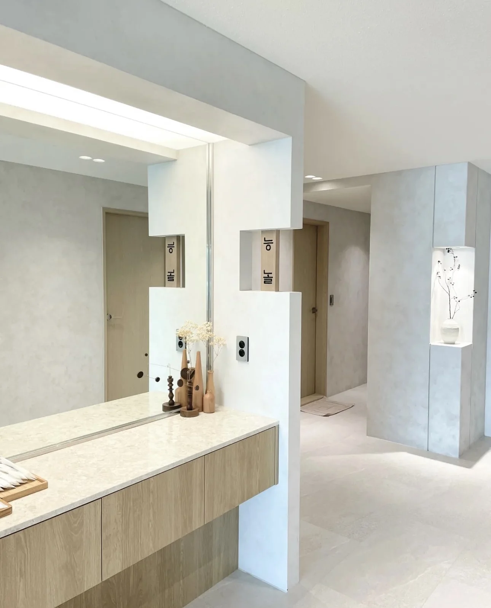

Orot — the sea,
from the top floor
The highest floor of the building. The beach and the water open up below you, and the jacuzzi at sunset is what Orot is known for.
One floor higher, where the sunset stays longer
Orot is on the 6th floor. Looking down from one level above Heyum, the curve of the whole beach, Gwangandaegyo bridge and the horizon beyond it spread out wider. Draw a bath as the sun drops and the sunset comes into the room with you.
The living room and the jacuzzi open into each other without a dividing wall, so water play and rest happen in one place. The dining table faces the glass too — meals keep the sea in view.
Check-in at 16:00, check-out at 12:00. The last morning does not need rushing: one more look at the water before you pack.
Opens the Airbnb listing in a new tab.

What not to miss in Orot
Sunset from the 6th floor
Fill the jacuzzi as the sun goes down and the Gwangalli sunset fills the windows.
Jacuzzi off the living room
No wall between them — children move from play to water to sofa without a detour.
Dining with a view
The table faces the sea, so morning coffee and a late glass both look outward.
A 12:00 check-out
A slower last morning: a beach walk, then back to pack.
Inside Orot
Starting with the sunset jacuzzi, then the living room, the dining table and the bedrooms.





The 6th-floor layout

The jacuzzi flows into the living space, with three bedrooms, two bathrooms and the kids' room arranged around it.
Orot, 6th-floor plan (for room layout reference)
Orot amenities
Living room
- 100-inch projector
- Air purifier
- Sofa
- Large floor table
- Jacuzzi
- Baby high chair
Bedrooms
- 5 queen beds
- Wardrobes
- 3 vanities
- 3 hair dryers
Kitchen
- Fridge
- Microwave
- Rice cooker
- Ice water purifier
- Coffee machine
- Kettle
- Induction hob
- Tableware & cookware
- Wine glasses
- Drum washing machine
Bathrooms
- Shampoo & body wash
- Hand wash
- Cleansing foam & oil
- Towels & shower towels
Kids
- Jungle gym & trampoline
- Slide & swing
- 32-inch floor console
- 50-inch TV (YouTube, Netflix)
Gwangalli on foot from Orot
The lift opens onto the beach road. Walk the shoreline you have just seen from the 6th-floor window.
Staying in Orot
Orot — before you book
How much sea do you see from the 6th floor?
The whole sweep of Gwangalli Beach, the water and Gwangandaegyo bridge through the full-width windows — a wider view than Heyum one floor below.
When is the sunset?
The sunset comes through the jacuzzi-side windows at the end of the day. Sunset time shifts with the season, so check it for your dates.
Is the jacuzzi separate from the living room?
In Orot the two are connected without a wall, which makes it easy to move between water and sofa with children.
What can I do with a 12:00 check-out?
Breakfast, one more walk on the beach, then pack at your own pace. The room needs to be vacated by 12:00.
Can I book Orot and Heyum together?
They are separate listings. To use both floors, make two bookings on Airbnb.
Contact & directions
Questions before booking? Call or message us. The map below shows the actual location on Gwangalli Beach.
Phone
Naver TalkTalk
Naver Place
Book Orot
Pick your dates and party size on Airbnb to see the final rate and availability.
Opens the Airbnb listing in a new tab.
Orot
- 8 standard · 12 max / 30,000 KRW per extra guest, under 24 months free
- Opens the Airbnb listing in a new tab
Rates and remaining rooms vary by date.